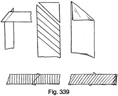
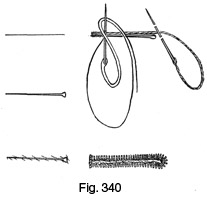

Early 1940's—Ladies' Garment Cutting and Making
by
F. R. Morris
Chapter XXI—Various Stitches in Tailoring and Dressmaking
THERE are many different varieties of stitching used in the making of garments of a tailored character, and it will be useful for the novice if these are described in some detail. For instance, pad-stitching the lapels is an operation the principles of which many dressmakers cannot understand, and this is only one stitch of which knowledge is lacking. The stitches which finish off the commencements of pleats or pocket openings are another mystery to many workers; these stitches are known as the "sprat's head" or "arrowhead" and the "crow's foot."
As befits one of the most important decorative stitches and one which is a hallmark of finish on a tailored garment, the "sprat's head" will be described first.
The Sprat's Head Stitch (Fig. 331)
To make a sprat's head stitch, mark a triangle with chalk to the size required and then begin the stitch at the lower left-hand corner. Take the thread to the top corner and insert the needle from right to left in the material and then back to the lower right-hand corner, inserting the needle from right to left and bringing the stitch underneath the material to come to the outside in front of the commencement at the left corner inside the triangle. Draw the thread through and then take the needle to the top corner and insert from right to left below the previous stitch. Take back to the right bottom corner and insert the needle from right to left to come to the surface on the inside of the triangle at the left bottom corner. Repeat the above instructions until all the space inside the triangle is completely covered.
The Crow's Foot Tack (Fig. 332)
As a contrast to the sprat's head stitch, the crow's foot tack may be utilized. This tack resembles the sprat's head in shape, but the overlapping of the stitches is different and more complicated.
Firstly, mark the shape of the tack as illustrated by Fig. 332 and then commence from the left corner. Take the silk through the top corner from right to left and then diagonally down to the right corner and continue the stitch through in an upward direction. From the right corner take the silk to the left corner and insert the needle above the previous stitch in a downward direction from the left side of the triangle to the bottom side. Next take the silk to the top corner and insert the needle from right to left, and then insert it in the bottom side at the right lower corner to come out on the right side of the triangle. Continue by taking the silk over to the left side of the triangle and insert the needle in a downward direction to come out on the bottom side of the triangle, and continue to the top corner as described until the complete tack is formed.
The Bar-tack (Fig. 333)
The bar-tack is used to a great extent in the making of trousers and breeches. This tack may be employed for the plaquet opening on skirts, the pocket openings on trousers, and the cuff openings of sleeves.
To make the tack, with a single cord of silk take three long stitches to the length of tack required. Then work the barring stitch over the long stitches from side to side as illustrated by the diagram.
Cross-stitching a Hem (Fig. 334)
For catching down the hems of dresses, skirts, trousers turn-ups and almost every type of seam which needs neatening, the cross-stitch is indispensable.
Fig. 334 shows the working of this stitch. The edge of the seam to be cross-stitched is held away from the hand with the edge of the garment towards the worker, and the needle is inserted into the hem or turn-up at the left side. The silk is then taken to the right and the needle inserted from right to left in the material to come out on the left side. Continue by crossing the silk over towards the right in advance of the lower stitch and insert the needle from right to left as before. Similarly, in the upper row cross the silk forward towards the right and insert the needle from right to left. The needle is always inserted towards the commencement of the stitch, while the silk is always taken forwards away from the start.
Always endeavour to keep an even distance between the insertions of the needle, so that the slant of the cross-over stitches may be equal throughout.
Pad-stitching Lapels (Fig. 335)
Pad-stitching is an essential part of tailoring a coat, and in the absolute sense should form a perfect series of "V" stitches when completed. The right lapel is always commenced from the top of the crease line and the left from the bottom, so that width of canvas is worked equally over the lapel by the pad-stitching.
Insert the needle and silk from right to left, making sure not to take the stitch untidily through the material on the underneath. Continue to work down the lapel by stitches as above and, when at the end of the crease line, work back by inserting the point of the needle into the hole of the previous stitch and draw the silk through from right to left. Similarly, connect up the stitches in rows of "V" lines to extend to the edge of the lapel. In practice, these stitches do not often form perfect "V" marks as the tune spent on padding the lapel would be too long, and so it is necessary to spread the stitches out more.
Making a French Seam (Fig. 336)
For unlined coats and dress seams, make a French seam. Allow ½ inch for the seam when cutting from the material, and then lay the two wrong sides of the cloth together and machine down the edges a ¼-inch seam inside. Trim the edge and turn back to let the right sides of the material lie together and then machine down again, taking care to machine outside the first seam so that only a single seam of stitching is shown when finished.
The Lapped Seam (Fig. 337)
Another method of making a neat finish to the sideseams of unlined coats is the lapped seam, in which one side of the seam is turned in over the other and neatly felled down. When cutting from the material, allow a ¼-inch seam on one side and about 1 inch on the other, and then seam with ¾ inch allowed on the outside edge for the turning-in. Turn in the edge of the inlay ¼ inch, then fold over the edge of the narrow seam and fell down closely to the machine stitching.
Bound Button-holes (Fig. 338)
Bound button-holes should always be made before the facings of the coat are sewn on, and then the button-holes can be catch-stitched round to the canvas.
Mark the button-hole length on the fronts of the coat and tack round to keep the parts together, as in Fig. 338 (a). Cut the facing for the button-hole on the bias of the material for ease in turning out and tack over the button-hole line. Make a chalk line on the bias material immediately over the original button-hole line and then machine round as illustrated by Fig. 338 (b). Keep the machine lines about ¼ inch apart so that the jeattings of the button-hole finish very closely. Cut down the centre of the chalk mark and notch into each corner to the machine stitching, as shown by Fig. 338 (c).
Pull the bias material through into the inside of the coat and press open the edge seams (Fig. 338 (d)). Pleat over the corners of the facing and baste round preliminary to catch-stitching round the edges (Fig. 338 (e)). Catch-stitch round the edges of the facing, and then, after the coat facing has been sewn on, slit through and turn in the edges of the facing for felling down round the button-hole, as shown by Fig. 338 (f) and (g).
Bias Bindings (Fig. 339)
Bias bands should be cut on the exact bias, otherwise a twisted band will result in the finished work. To cut the band, commence by levelling up the material edge by tearing across or cutting in a drawn thread mark, and then fold the end of the material towards the selvedge to form a diagonal fold edge which is the true bias. The bias bands should be cut on this fold edge, marked off to the width required, and follow the fold edge accurately.
When seaming bias bands for increased length, cut diagonally across the end of the bands and machine together on the straight of the material. The diagram shows the right way to machine bias bands, with the grain of each band agreeing. With diagonal stripes, match the bias bands so that the pattern runs the same way when machined together.
Bias bands shape themselves to curves if they are not too acute, but care should be taken to ensure that the seam of the material bound is notched to prevent twisting.
Bindings are cut to varying widths, depending on the material required to be bound. For velvets, a single-width band cut to four times the finished binding width is required. For thin materials, such as silks and transparent fabrics, a double band cut on the fold edge should be used so that less difficulty will be experienced in turning back and hemming down to a regular width.
The Button-hole Stitch (Fig. 340)
The button-hole stitch is one of the most important and difficult of all tailoring stitches and has a distinct influence on the finished appearance of the garment.
Mark a line for the button-hole with chalk and then cut in the line to the required length. If the hole has an eye, it is necessary to cut this out carefully. Serge round the button-hole to keep the edges from fraying out.
The next step is the barring, which consists of carrying the barring thread or gimp round the hole at a distance from the edge in accordance with the width of the button-hole stitches. To commence, place the left side of the hole between the thumb and finger with the eye away from the hand, press the needle through the hole opening to the underside and then insert through the material to the outside. Before pulling the needle clear of the material, cast the button-hole silk round the needle as illustrated by the diagram. Completely draw out the needle and pull the stitch close to the edge of the hole. Continue making each stitch in a similar manner until the hole is completed.
When button-holing is being carried out round the eye, the stitches must be made very thickly and the purl of each stitch pulled well up. When the end of the button-hole opening is reached, the two sides of the hole should be brought together by the last stitch; then the needle is passed twice through the material, and a bar may be formed by loop stitches made across the end of the hole.
Button-hole making needs much practice before proficiency can be reached, and a point to note is that the stitches should be drawn slightly forward and pulled into place with exactly the same tension for each purl. In lieu of gimp, four-cord thread, well waxed, will serve for the barring thread.